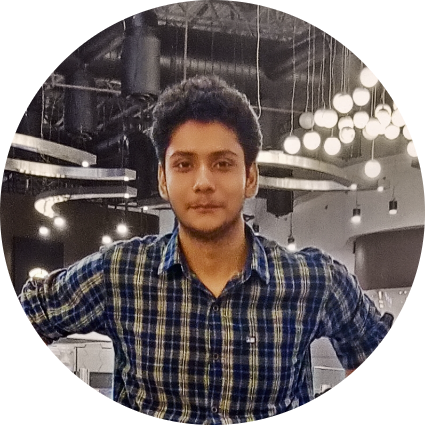
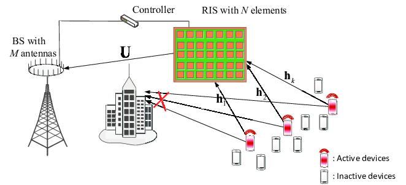
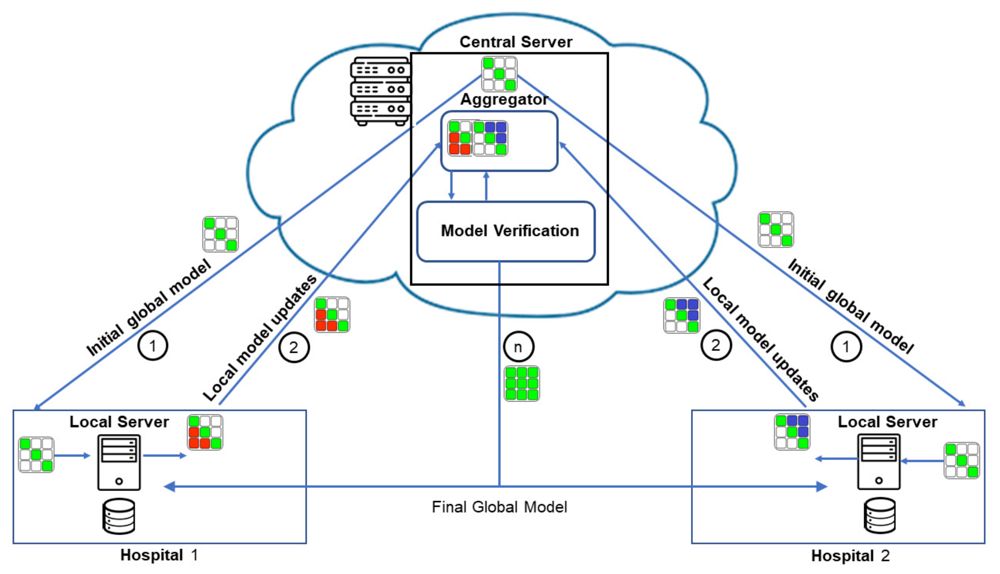

|

Google Scholar | Github | LinkedIn | old website More about me: Blog Posts & Tutorials | Coursework |
I am a Computer Science Engineering graduate from the
Indian Institute of Information Technology Bhagalpur,
with a strong interest in Artificial Intelligence and its applications. My primary research interests include autoencoders, attention mechanisms, large language models (LLMs), and graph deep learning. I have worked on designing custom attention mechanisms to encode communication-specific information for efficient bandwidth consumption in 6G communication systems. My experience also spans spatio-temporal data analytics, data distillation, and high-dimensional nearest neighbor search, and I am currently exploring LLM-based agentic frameworks.
I am currently working as a Machine Learning Engineer at Fastcode AI, where I work under the guidance of former Apple scientist Prof. Arjun Jain in the Machine Learning team. My work focuses on building and applying advanced machine learning solutions, with research interests spanning causal representation learning, neuro-symbolic AI, and machine unlearning with provable guarantees. I have previously worked as an Associate Data Scientist at Crosslynx US LLC under guidance of Aman Srivastava where I worked on electricity theft detection where I designed novel algorithm for detecting theft at Distribution Transformer Level using unsupervised learning. I also worked on designing an agentic Chatbot where I implemented memory based techniques, guardrails, and other advanced techniques. I recently completed a Research Internship at Indian Institute of Technology, Varanasi working with Dr. Om Jee Pandey. My research focused on designing novel attention mechanisms based autoencoders for efficient bandwidth consumption in 6G communication systems. I love reading random facts, listening to jazz music, and right now, I'm just trying to work my way through documenting my life. :3 I am always open to collaborations and discussions. Please feel free to reach out! Other: Fun/Favorites |
| |
| [Dec 25] | Presented "Federated Learning-Based Fault-Tolerant RIS Reconfiguration for Multi-User IoT Networks" to Prof. Chandra Murthy at IEEE ANTS 2025 New Delhi! |
| [Nov 25] | Second-author paper "BORCAE: Bayesian Optimized Residual Convolutional Autoencoder for Efficient Feedback Compression in RIS-Assisted Time-Varying IoT Networks" accepted in IEEE Transactions on Artificial Intelligence. [IEEE] |
| [Oct 25] | Second-author paper "Attention-Guided Encoder-Decoder Design for Efficient RIS Phase Configuration in Time-Varying IoT Networks" accepted in IEEE Transactions on Artificial Intelligence. [IEEE] |
| |
|  |
|
 |
|
|  |
|
| |
|
Associate Data Scientist Nov 2024 - Jan 2026 Crosslynx US LLC Noida, India |
Worked with Aman Srivastava in the Data Science team. Developed a novel framework for electricity theft detection at the DTR level using density-based clustering (HDBSCAN). Also designed agentic systems to automate smart-meter support queries, incorporating advanced memory architectures and agentic guardrails for reliability and safety. |
|
AI Developer Intern Sept 2024 - Oct 2024 Quamin Tech Solution Bengaluru, India |
Worked on developing a machine learning model for plant leaf disease detection and plant condition forecasting using XGBoost. The system leveraged feature-driven learning to accurately classify disease types and predict plant health trends, enabling early intervention and improved agricultural decision-making. |
|
Research Assistant Feb 2024 - Present IIT BHU (Varanasi) Delhi, India |
Working with Dr. Om Jee Pandey in EEE Lab . Developed AGENE, an autoencoder-based framework for efficient encoding and decoding of QPC instructions to enable bandwidth-efficient information transfer to reconfigurable intelligent surfaces (RIS). Incorporated a novel attention mechanism to capture communication-specific features, outperforming prior state-of-the-art methods by up to 30% across multiple evaluation settings. |

|
|